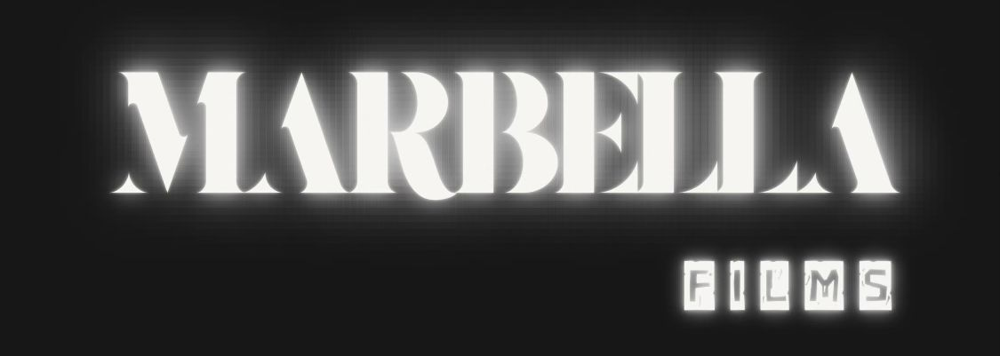

Conclusión: El Arte de Diseñar Sitios Web
¿Para qué aprender a diseñar sitios web?
Aprender a diseñar sitios web fue más allá de dominar herramientas técnicas; fue descubrir cómo puedo fusionar arte y tecnología para conectar con mi audiencia de manera significativa. Es una oportunidad para crear experiencias digitales que no solo funcionen bien, sino que también emocionen y inspiren. Diseñar sitios web me permite y permitirá expresar mi visión artística y comunicar los valores profundos con los que quiero inspirar.
Comentario sobre mi sitio web
Mi sitio web, como proyecto final para graduarme de Bachillerato como diseñadora gráfica, es un reflejo de mi dedicación a la creatividad, humanidad, filosofía, amor y cine. Cada detalle y cada elemento están cuidadosamente diseñados para transmitir la esencia de mi en Marbella Films: mi misión de crear conciencia sobre problemas sociales y admirar a la humanidad a través del cine. Es más que una plataforma digital; es una de mis primeras declaraciónes artísticas y profesionales al mundo.
¿Qué me deja esta salida ocupacional?
Esta experiencia me deja con una base de habilidades técnicas y creativas que sé que serán fundamentales en mi carrera profesional. Aprendí no solo a diseñar sitios web, sino también a comunicar de manera efectiva a través del diseño gráfico. Además, me lleva la certeza de que elegí el camino correcto para combinar mi pasión por el arte con mi deseo de hacer un impacto positivo en la sociedad. Este camino me ha enseñado la importancia de la perseverancia, la autocrítica constructiva y la adaptabilidad en un campo tan dinámico como el diseño digital.
Un comentario sobre el curso y lo que aprendí
El curso ha sido una experiencia transformadora donde he crecido tanto personal como profesionalmente. Bajo la guía inspiradora del profesor José Quetzalcóatl, he aprendido a enfrentar desafíos con confianza y a superar mis propias expectativas. Su apoyo constante y su exigencia me motivaron a explorar nuevas técnicas y a elevar la calidad de mi trabajo. A través del curso, he fortalecido mi creatividad y mi capacidad para contar historias visualmente, habilidades que sé que llevaré conmigo en cada proyecto futuro, y todo esto me lo llevo en la mente, y en el alma.